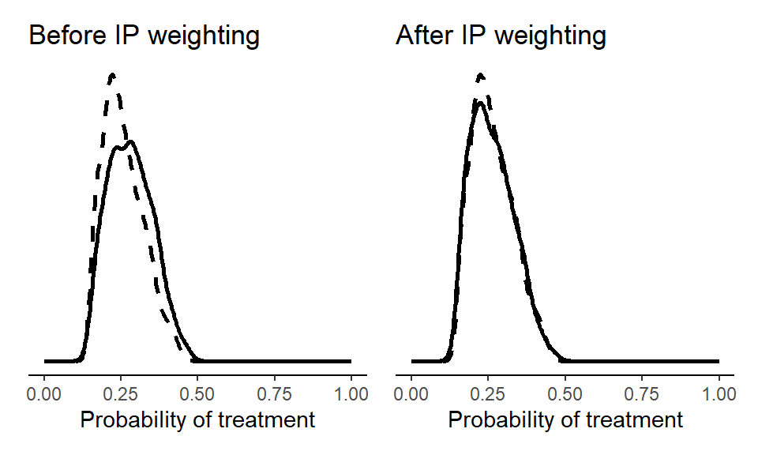
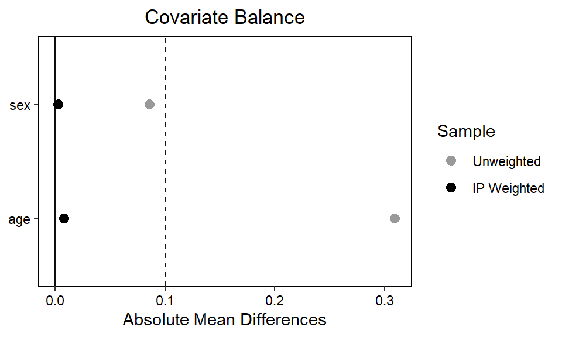

Chapter 4 Adventures in G-methods
4.1 Doubly robust estimation
For demonstrating a ‘doubly robust’ estimator that combines IPW and g-computation, we use the nhefs data from the causaldata package. This data come from the National Health and Nutrition Examination Survey Data I Epidemiologic Follow-up Study.
We first calculate stabilized IP weights.
treat_mod <- glm(qsmk ~ sex + age,
data = d,
family = "binomial")
d$pX <- predict(treat_mod, type = "response")
pn <- glm(qsmk ~ 1,
data = d,
family = "binomial")
d$pnX <- predict(pn, type = "response")
d$sw <- with(d, ifelse(qsmk==1, pnX/pX, (1-pnX)/(1-pX)))We can then plot the sample before and after weighting.
library(ggplot2)
library(patchwork)
p1 <- ggplot() +
# X = 1 (sample)
geom_density(data = subset(d, qsmk == 1),
aes(x = pX), size = 1) +
# X = 0 (sample)
geom_density(data = subset(d, qsmk == 0),
aes(x = pX), linetype = "dashed", size = 1) +
theme_classic() +
theme(
axis.text.y = element_blank(),
axis.ticks.y = element_blank(),
axis.title.y = element_blank(),
axis.line.y = element_blank()) +
xlim(c(0,1)) + xlab("Probability of treatment") +
ggtitle("Before IP weighting")
p2 <- ggplot() +
# X = 1 (pseudo-population)
geom_density(data = subset(d, qsmk == 1),
aes(x = pX, weight = sw), size = 1) +
# X = 0 (pseudo-population)
geom_density(data = subset(d, qsmk == 0),
aes(x = pX, weight = sw), linetype = "dashed", size = 1) +
theme_classic() +
theme(
axis.text.y = element_blank(),
axis.ticks.y = element_blank(),
axis.title.y = element_blank(),
axis.line.y = element_blank()) +
xlim(c(0,1)) + xlab("Probability of treatment") +
ggtitle("After IP weighting")
(p1 + p2)
We can also make a ‘love plot’ using the cobalt package to inspect whether the IP weights ensures acceptable balance on the level of individual covariates. By setting continuous = "std", we indicate that the function should return the standardized absolute mean difference for any continuous variables (here, age). If we wanted the raw absolute mean difference, we’d set continuous = "raw".
library(cobalt)
love.plot(treat_mod, abs = TRUE,
sample.names = c("Unweighted", "IP Weighted"),
weights = d$sw,
colors = c("grey60", "black"),
thresholds = c(m = .1))
bal.tab(treat_mod, abs = TRUE, un = TRUE, thresholds = c(m = .1), weights = d$sw, continuous = "std")$BalanceFinally, we include the stabilized weights in an outcome model, which we in turn use for g-computation.
out_mod <- lm(wt82_71 ~ qsmk + sex + age, data = d, weights = sw)
EX1 <- predict(out_mod,
newdata = transform(d, qsmk = 1))
EX0 <- predict(out_mod,
newdata = transform(d, qsmk = 0))
mean(EX1)-mean(EX0)## [1] 3.0392864.1.1 Bootstrapping
The basic approach to bootstrapping is similar as in the previous chapter. Here, we bootstrap the doubly robust estimator from above. We use only 100 bootstrap samples, but in practice we’d often want more.
library(boot)
# Number of bootstrap samples
n_bootstrap <- 100
bootstrap_analysis <- function(data, indices) {
# Resample the data
d <- data[indices, ]
# IPW
treat_mod <- glm(qsmk ~ sex + age,
data = d,
family = "binomial")
d$pX <- predict(treat_mod, type = "response")
pn <- glm(qsmk ~ 1,
data = d,
family = "binomial")
d$pnX <- predict(pn, type = "response")
d$sw <- with(d, ifelse(qsmk==1, pnX/pX, (1-pnX)/(1-pX)))
# G-computation with IP weighted outcome model
out_mod <- lm(wt82_71 ~ qsmk + sex + age, data = d, weights = sw)
EX1 <- predict(out_mod,
newdata = transform(d, qsmk = 1))
EX0 <- predict(out_mod,
newdata = transform(d, qsmk = 0))
mean(EX1)-mean(EX0)
# Return the coefficient of X
return(mean(EX1)-mean(EX0))
}
# Perform bootstrapping
bootstrap_results <- boot(data = d,
statistic = bootstrap_analysis,
R = n_bootstrap)
# Summarize the bootstrap results
bootstrap_summary <- boot.ci(bootstrap_results, type = "norm")
# Print the results
print(bootstrap_summary)## BOOTSTRAP CONFIDENCE INTERVAL CALCULATIONS
## Based on 100 bootstrap replicates
##
## CALL :
## boot.ci(boot.out = bootstrap_results, type = "norm")
##
## Intervals :
## Level Normal
## 95% ( 2.092, 3.909 )
## Calculations and Intervals on Original Scale4.1.2 More covariates
We can try the same analysis but with a more comprehensive set of covariates.
library(boot)
bootstrap_analysis <- function(data, indices) {
# Resample the data
d <- data[indices, ]
# IPW
# see: https://remlapmot.github.io/cibookex-r/ip-weighting-and-marginal-structural-models.html
treat_mod <- glm(qsmk ~ sex + race + age + I(age ^ 2) +
as.factor(education) + smokeintensity +
I(smokeintensity ^ 2) + smokeyrs + I(smokeyrs ^ 2) +
as.factor(exercise) + as.factor(active) + wt71 + I(wt71 ^ 2),
data = d,
family = "binomial")
d$pX <- predict(treat_mod, type = "response")
pn <- glm(qsmk ~ 1,
data = d,
family = "binomial")
d$pnX <- predict(pn, type = "response")
d$sw <- with(d, ifelse(qsmk==1, pnX/pX, (1-pnX)/(1-pX)))
# G-computation with IP weighted outcome model
out_mod <- lm(wt82_71 ~ qsmk + sex + race + age + I(age ^ 2) +
as.factor(education) + smokeintensity +
I(smokeintensity ^ 2) + smokeyrs + I(smokeyrs ^ 2) +
as.factor(exercise) + as.factor(active) + wt71 + I(wt71 ^ 2),
data = d, weights = sw)
EX1 <- predict(out_mod,
newdata = transform(d, qsmk = 1))
EX0 <- predict(out_mod,
newdata = transform(d, qsmk = 0))
mean(EX1)-mean(EX0)
# Return the coefficient of X
return(mean(EX1)-mean(EX0))
}
# Perform bootstrapping
bootstrap_results <- boot(data = d,
statistic = bootstrap_analysis,
R = n_bootstrap)
# Summarize the bootstrap results
bootstrap_summary <- boot.ci(bootstrap_results, type = "norm")
# Print the results
print(bootstrap_summary)## BOOTSTRAP CONFIDENCE INTERVAL CALCULATIONS
## Based on 100 bootstrap replicates
##
## CALL :
## boot.ci(boot.out = bootstrap_results, type = "norm")
##
## Intervals :
## Level Normal
## 95% ( 2.620, 4.393 )
## Calculations and Intervals on Original ScaleThe overall inference is the same, although the more comprehensive adjustment set yields a slightly higher point estimate (around 3.5 kg), indicating that quitters gain even more weight than previously estimated.
4.2 Bootstrapped sub-group analysis
bootstrap_analysis <- function(data, indices) {
# Resample the data
d <- data[indices, ]
# IPW
pn_sub <- glm(qsmk ~ 1 + sex, data = d, family = "binomial")
d$pnX <- predict(pn_sub, type = "response")
d$sw <- with(d, ifelse(qsmk == 1, pnX / pX, (1 - pnX) / (1 - pX)))
# G-computation with IP weighted outcome model
out_mod <- glm(wt82_71 ~ qsmk + sex + age + qsmk * sex, data = d, weights = sw)
EX1S1 <- predict(out_mod, newdata = transform(d, qsmk = 1, sex = as.factor(1)))
EX1S0 <- predict(out_mod, newdata = transform(d, qsmk = 1, sex = as.factor(0)))
EX0S1 <- predict(out_mod, newdata = transform(d, qsmk = 0, sex = as.factor(1)))
EX0S0 <- predict(out_mod, newdata = transform(d, qsmk = 0, sex = as.factor(0)))
mean_diff_S1 <- mean(EX1S1) - mean(EX0S1)
mean_diff_S0 <- mean(EX1S0) - mean(EX0S0)
return(c(mean_diff_S1, mean_diff_S0))
}
# Perform bootstrapping
bootstrap_results <- boot(data = d, statistic = bootstrap_analysis, R = n_bootstrap)
# Extract and display results
boot.ci(bootstrap_results, type = "norm", index = 1) # For females## BOOTSTRAP CONFIDENCE INTERVAL CALCULATIONS
## Based on 100 bootstrap replicates
##
## CALL :
## boot.ci(boot.out = bootstrap_results, type = "norm", index = 1)
##
## Intervals :
## Level Normal
## 95% ( 1.619, 4.043 )
## Calculations and Intervals on Original Scale## BOOTSTRAP CONFIDENCE INTERVAL CALCULATIONS
## Based on 100 bootstrap replicates
##
## CALL :
## boot.ci(boot.out = bootstrap_results, type = "norm", index = 2)
##
## Intervals :
## Level Normal
## 95% ( 2.291, 4.585 )
## Calculations and Intervals on Original Scale